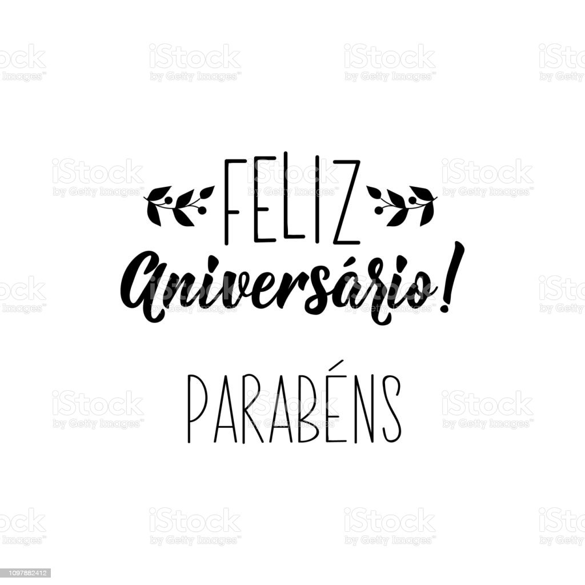

Infelizmente foi atrasado mas foi de coração, vim por meio desse site te deixar algumas mensagens e imagen , parabéns meu mano, e bora que foguete não tem ré, e caso fale que eu peguei o site pronto é ko do seu parça misael para meu amigo teixeira, tmj manin te amo s2
Que ao receber essa mensagem seu coração pulse mais forte, seus olhos brilhem e seus lábios sorriam. Esta é minha forma mais espontânea e simples para que você faça desse dia uma data muito importante para quem está a sua volta. Quero encher essa mensagem de flores, sorrisos, palavras significativas ao nível da sua bondade. Quero colocar dentro desta mensagem todos os corações que te apreciam, toda a luz e paz que você merece. Que a felicidade te acompanhe sempre e que ela seja ainda maior do que já é, pois é maravilhoso o bem que você planta ao longo do seu caminho. Tenha certeza que na vida, no tempo e na eternidade, Deus te descreve sorrindo tudo isso que tentei te expressar
Que ao receber essa mensagem seu coração pulse mais forte, seus olhos brilhem e seus lábios sorriam. Esta é minha forma mais espontânea e simples para que você faça desse dia uma data muito importante para quem está a sua volta. Quero encher essa mensagem de flores, sorrisos, palavras significativas ao nível da sua bondade. Quero colocar dentro desta mensagem todos os corações que te apreciam, toda a luz e paz que você merece. Que a felicidade te acompanhe sempre e que ela seja ainda maior do que já é, pois é maravilhoso o bem que você planta ao longo do seu caminho. Tenha certeza que na vida, no tempo e na eternidade, Deus te descreve sorrindo tudo isso que tentei te expressar
Parabéns, anjo sem asas! Agradeço a Deus todos os dias por ter conhecido você e por ter o privilégio de ser uma de suas amigas. Te amo muito e quero, neste dia tão especial, te desejar todos os votos de felicidade, amor, carinho, amizade e tudo de melhor que possa existir... Que a cada novo dia você tenha esse sorriso lindo estampado no rosto, aquele que só você tem e que contagia a todos ao seu redor. Que Deus te ilumine sempre e guie seus passos por onde quer que ande. E lembre-se de uma coisa: eu nunca vou deixar você ficar chorando, sabe por quê? Porque te amo e não quero ver lágrimas escorrerem na sua linda face... conta comigo pra tudo... Você faz parte do meu coração e sempre fará. Felicidades, amiga!
Que Deus lhe conceda bençãos e um caminho iluminado. Que Ele te permita viver grandes vitórias. Viva cada momento com amor, liberdade, ousadia, responsabilidade, garra, vontade, sabedoria, discernimento, honestidade, oportunidades e alegria. Continue a ser sempre essa pessoa cativa e querida por nós. Obrigada por sua existência e sua amizade. Feliz dia do seu aniversário!NARA NUBIA ALENCAR QUEIROZ73 compartilhamentosFelicidades para você, por este dia tão especial que é o seu aniversário. Parabéns! Que possa ter muitos anos de vida, abençoados e felizes, e que estes dias futuros sejam todos de harmonia, paz e desejos realizados. Que seu coração esteja sempre em festa, porque você é um ser de luz e especial para mim
Sempre começamos pelos parabéns, felicidades, tudo de bom. Dessa vez vou fazer diferente, antes de qualquer coisa eu preciso agradecer, pela sua amizade, sua parceria, conversas. Agradecer por confiar em mim, e principalmente por me deixar confiar em você, escutar as minhas asneiras do dia-a-dia e muitas vezes morrer de rir, sempre me ajudando, me encorajando e torcendo por mim. Sei que o carinho que tenho por você é reciproco, e fico extremamente feliz por isso. Portanto, antes de qualquer coisa... OBRIGADO POR TUDO. Não preciso te ver todo dia pra saber que está bem, pois quando não está, eu sinto. E quem disse que a amizade não resiste a distância? Bom, ainda não ouviu falar de nós... Voltando aos parabéns então :) Falar que te desejo toda a felicidade do mundo, e que pode contar comigo sempre nem precisa né? Você já deve saber disso faz tempo. Torço muito por você e quando estiver la na frente, vitoriosa nessa vida. Vou me orgulhar de dizer: era minha parceira, nos divertimos muito. Família é quem você escolhe pra viver. Família é quem você escolhe pra você, não precisa ter a mesma corrente sanguínea, é preciso ter sempre um pouco mais de sintonia![...] Por fim... Há quem diga que estamos sozinhos no mundo tem gente que acha que não se pode confiar em ninguém sou obrigado a discordar, e com toda certeza eu digo: existem pessoas que Deus coloca em nossas vidas pra nos ajudar e nos acompanhar sempre, damos o nome a essas pessoas de: AMIGOS! E uma dessas pessoas faz aniversário hoje, e como não sou de esquecer datas...
